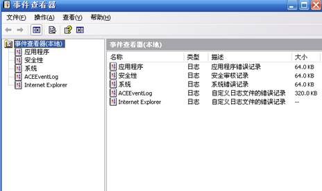
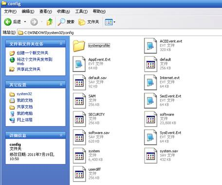
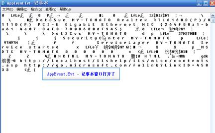
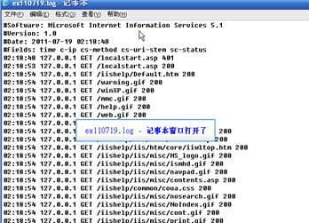
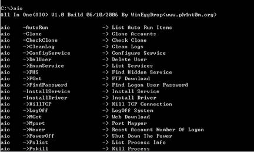
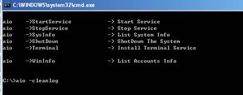
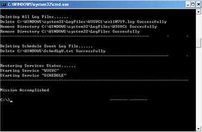
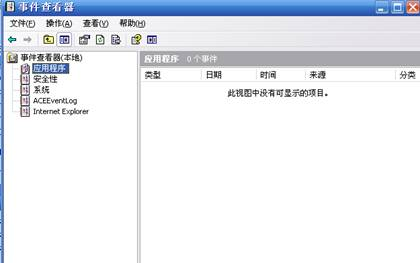
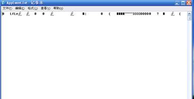
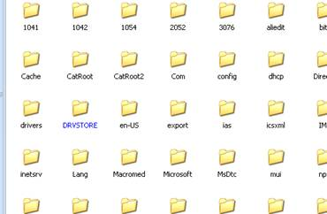

Windows日志工具清除实验2
实验目的
1、 熟悉各种日志存放的默认位置，查看方式
2、 掌握aio清除日志的方法
3、 掌握针对工具日志清除的防御方法。
实验要求
1、 认真阅读和掌握本实验相关的知识点。
2、 得到实验结果，并加以分析生成实验报告。
注：因为实验所选取的软件版本不同，学生要有举一反三的能力，通过对该软件的使用能掌握运行其他版本或类似软件的方法。
实验步骤
1、查看windows日志
打开事件查看器（控制面板-管理工具-事件查看器），可以查看系统事件、安全日志、应用程序日志等（如图1所示）。

图1 事件查看页面
2、找到系统日志、应用程序日志、IIS日志的默认路径
系统日志、应用程序日志等默认路径在C:\WINDOWS\system32\config下（如图2所示），点击任意一个，用记事本方式打开，可以看到里面的内容如图3所示。

图2 各种日志所在默认位置
说明：IIS日志在C:\WINDOWS\system32\LogFiles\W3SVC1这个默认路径上，如图4、图5所示

图3 应用程序日志中的内容

图4 IIS日志默认位置

图5 IIS日志中的内容
3、运行aio程序
在dos下找到AIO程序所在位置，运行aio，运行成功后，会显示所有参数及参数含义列表。

图6 aio运行界面
注意：如果有杀毒软件，该程序会被杀掉，或者提示程序不可用，此时关闭杀毒软件，或结束掉杀毒软件的服务即可重新运行。
4、运行删除日志命令
使用aio �Ccleanlog删除默认位置的所有日志

图7 日志删除命令执行界面

图8 日志删除执行界面2
说明：aio软件功能强大，除了日志删除外，还可以用于账户拷贝、服务创建等，此处只用到它的清楚日志功能。对于日志删除功能，该软件不提供关于日志删除的其他参数，所以只能对默认位置的常用日志（系统日志、应用程序日志、IIS日志、FTP日志等）进行完成删除。
5、删除检验
执行完后，在此回到事件查看器，查看目前事件情况，如图9所示，回到默认路径上，打开其中的应用程序日志，查看日志的变化情况。如图10所示；并且可以看到，默认路径下已经没有IIS日志所在的logfile文件夹了，如图11所示。

图9 删除日志后的事件查看器情况

图10 应用程序日志中内容变化

图11 没有了logfile文件夹
实验总结
可以看到，在默认位置的日志可以通过手动查找或者工具删除的形式予以删除，此外，不同的工具对于删除日志的功能实现程度不同，有的可以删除指定IP或目录信息，有的只能是全部删除，为了不让管理者因为日志突然删除而怀疑入侵情况，现在大多采用指定删除或者伪造日志的方式隐藏攻击者的攻击行为。